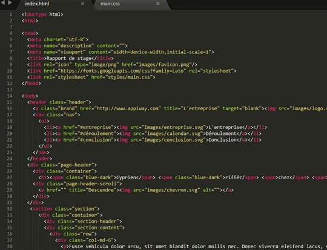
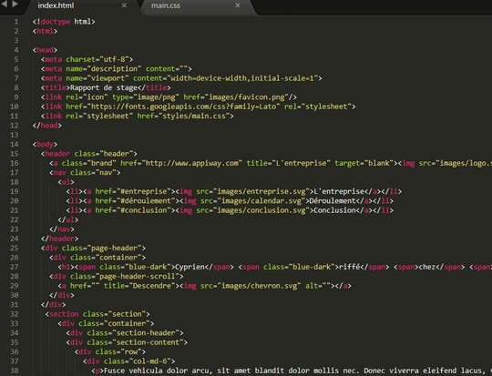

JOUR 5 : rédaction du contenu
Le dernier jour de mon stage chez Appiway est arrivé. Il ne me reste plus qu'à rédiger le contenu de mon site et inclure les dernières images et il sera parfait.
Comme d'habitude, j'arrive aux alentours de 8h30 et je pars à la recherche des ultimes images pour mon site. Ensuite je vais poser mes dernières questions à Kévin à propos de l'entreprise pour pouvoir remplir la première partie de mon site. Vers 10h, heure d'arrivée de la plupart des membres de l'équipe, je regarde avec Ludovic, qui n'était pas là la veille, mon code pour régler les derniers petits problèmes de mon site puis avec Jean-Charles, un autre développeur d'Appiway, on regarde comment mettre mon site en ligne ce qui permettra à mon professeur de le consulter sur Internet. Comme toute la structure est terminée, c'est parti pour la rédaction de tout le contenu. L'heure de la pause arrive à grands pas puis je reprends ma rédaction. La fin de la semaine arrive et après avoir remercié toute l'équipe d'Appiway de m'avoir accueilli cette semaine je rentre chez moi.


 
